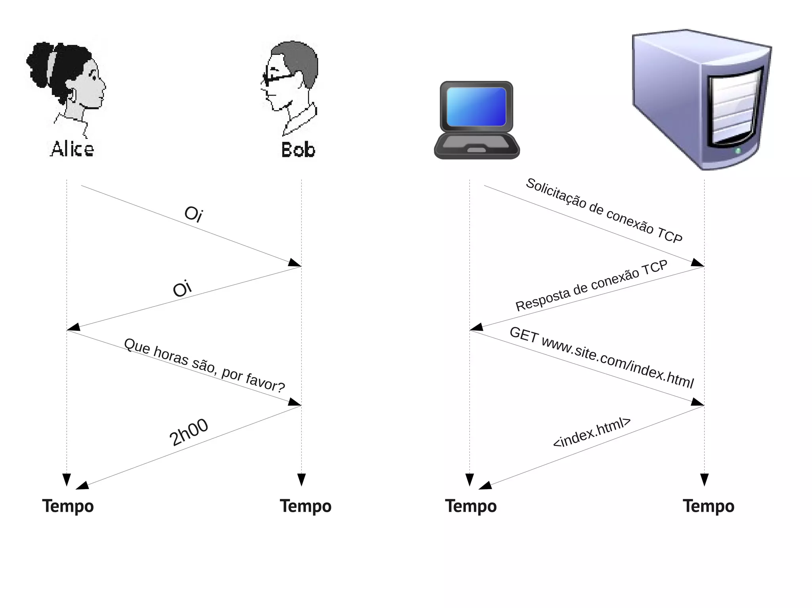
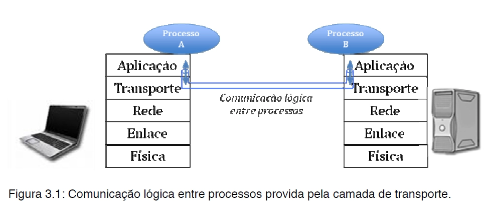

Disciplinas
FUNDAMENTOS DE WEB-T01-2024-1. Concluído
Materiais
Vídeo 2 - Fundamentos de Internet e Web - Protocolos de comunicação da internet sendProf° ministrante: Júlio Cezar Estrela. (UNIVESP)
Conteúdo
Protocolos de comunicação da internet
Roteiro:- Importância dos protocolos na comunicação.
- O que é um protocolo.
- Protocolos fundamentais para comunicação das aplicações que utilizam a Internet.
- TCP.
- UDP.
- IP.
Importância dos protocolos na comunicação.
Protocolos humanos:
- "Que horas são?"
- "Eu tenho uma pergunta."
- Como abrir/fechar uma porta?
- Como fazer um churrasco?
Protocolos de comunicação em redes:
- Máquinas no lugar de humanos.
- Toda atividade de comunicação na internet é governada por protocolos.
Importante:
- Para mensagens específicas que enviamos e ações específicas que realizamos.
- Há respostas específicas a serem recebidas.
Exemplo:
- Saber que horas são.
O que é um protocolo.
Protocolo de horas (humanos/computadores) https://image.slidesharecdn.com/unidade1-redesdecomp-120316160929-phpapp02/75/Unidade-1-redes-de-comp-12-2048.jpg - Um protocolo, em termos gerais, é um conjunto de regras, convenções ou procedimentos estabelecidos para permitir a comunicação, interação ou troca de informações entre sistemas, dispositivos ou pessoas.
- Para humanos, o protocolo de horas se refere às práticas sociais, regras ou convenções seguidas para determinar e coordenar horários.
- Já no âmbito computacional, os protocolos de horas são conjuntos de regras e processos seguidos por dispositivos ou sistemas para sincronizar seus relógios e manter uma noção precisa do tempo.
- Esses protocolos de horas para computadores são essenciais para operações críticas que dependem da precisão temporal, como transações financeiras, sincronização de dados em redes, registros de eventos sequenciais e muito mais.
- O serviço a ser oferecido.
- O ambiente onde ele executa, incluindo os serviços utilizados pelo protocolo.
- O vocabulário de mensagens utilizado para implementá-lo.
- O formato de cada mensagem do vocabulário.
- Os algoritmos que tentam garantir a troca de mensagens e a integridade do serviço oferecido.
- Protocolos são padronizações que definem como se dá a comunicação e a utilização do meio físico na infraestrutura de comunicação (rede)
Os protocolos consideram:
- Semântica (regras): temporizações, controle de erros, etc.
- Sintaxe (formato): codificação, quadro, etc.
"Um protocolo define o formato e a ordem das mensagens trocadas entre duas ou mais entidades comunicantes, bem como as ações realizadas na transmissão e/ou recepção dessas mensagens"
Protocolos de comunicação fundamentais da Internet.
- Na comunicação de aplicações que utilizamos na internet há diversos protocolos.
- Cada camada possui um ou mais protocolos, dependendo do modelo de camadas utilizado.
- TCP/IP com suas camadas e protocolos.
- A Internet é composta de vários tipos de redes que operam com inúmeros protocolos de comunicação
- No contexto da infraestrutura de comunicação, grande parte da Internet opera no modelo TCP/IP.
- 3 protocolos deste modelo:
- IP.
- TCP.
- UDP.
Emissor ↓ Receptor ↓

Protocolos Fundamentais para Comunicação na Internet:
_____________________________________
| Aplicações (HTTP, FTP, SMTP, etc.) |
|_____________________________________|
| Camada de Aplicação |
|_____________________________________|
| TCP (Transmission Control Protocol) |
| UDP (User Datagram Protocol) |
| IP (Internet Protocol) |
|_____________________________________|
| TCP Camada de Transporte |
|_____________________________________|
| UDP Camada de Internet |
|_____________________________________|
| IP Camada de Rede |
|_____________________________________|
IP (Internet Protocol)
O Protocolo da Internet (IP) é um dos principais protocolos da camada de rede no modelo TCP/IP. Sua responsabilidade central é realizar o roteamento e encaminhamento dos pacotes de dados entre diferentes dispositivos em uma rede.
- Principais responsabilidades do IP:
- 1. Endereçamento: Atribui endereços IP únicos a dispositivos na rede para identificação e comunicação. Esses endereços permitem que os pacotes sejam direcionados de um remetente para um destinatário específico.
- 2. Roteamento: Decide a melhor rota para os pacotes de dados viajarem de um ponto a outro na rede. Isso envolve tomar decisões sobre o caminho mais eficiente para a entrega dos dados, considerando fatores como latência, largura de banda e condições da rede.
- 3. Fragmentação e Remontagem: Se um pacote for muito grande para ser transmitido pela rede, o IP pode dividir esse pacote em fragmentos menores antes de enviá-los. O IP no destino então remonta esses fragmentos para recriar o pacote original.
- 4. Encaminhamento de Pacotes: Recebe pacotes de dados da camada superior (camada de transporte) e os encapsula com informações de cabeçalho IP, incluindo endereços de origem e destino. Em seguida, encaminha esses pacotes para o próximo salto na rede até que alcancem seu destino final.
Basicamente, o IP é responsável por permitir a comunicação entre dispositivos em uma rede, garantindo que os pacotes de dados sejam entregues corretamente e no tempo certo, independentemente da complexidade da infraestrutura de rede.
TCP (Transmission Control Protocol)
O Protocolo de Controle de Transmissão (TCP) é um dos protocolos fundamentais da camada de transporte no modelo TCP/IP. Sua principal responsabilidade é fornecer comunicação confiável e orientada à conexão entre aplicativos em dispositivos em uma rede.
- Principais responsabilidades do TCP:
- 1. Confiabilidade na Transmissão: O TCP garante que os dados transmitidos sejam entregues de forma confiável, verificando se os pacotes são recebidos e retransmitindo aqueles que podem ter sido perdidos ou corrompidos durante a transmissão.
- 2. Controle de Fluxo: Regula a taxa de transmissão de dados entre emissor e receptor, evitando que o receptor fique sobrecarregado por receber informações mais rapidamente do que consegue processar.
- 3. Controle de Congestionamento: Gerencia a quantidade de dados que pode ser enviada em um determinado momento para evitar congestionamentos na rede, ajustando a taxa de transmissão para evitar perda de pacotes e degradação do desempenho.
- 4. Segmentação e Reordenação: Divide os dados em segmentos de tamanho gerenciável para transmissão e reorganiza-os no destino, garantindo que os dados sejam entregues na ordem correta.
- 5. Handshaking e Terminação de Conexão: Estabelece, mantém e encerra conexões entre aplicativos em dispositivos diferentes. Isso inclui processos de início (handshaking) e encerramento de sessões de comunicação.
O TCP é crucial para a comunicação confiável e ordenada entre aplicativos em diferentes dispositivos conectados em redes, garantindo que os dados sejam transmitidos e recebidos sem erros, de forma ordenada e eficiente.
UDP (User Datagram Protocol)
O User Datagram Protocol (UDP) é outro protocolo da camada de transporte no modelo TCP/IP. Ao contrário do TCP, o UDP é um protocolo de transporte sem conexão e não oferece os mesmos recursos de confiabilidade e controle de erro que o TCP. Ele é mais leve e rápido, ideal para certos tipos de aplicativos que valorizam a velocidade sobre a precisão na entrega de dados.
- Principais características do UDP:
- 1. Sem Conexão: O UDP não estabelece uma conexão direta entre o emissor e o receptor antes de enviar dados. Isso o torna mais rápido, pois não há etapas de handshaking como no TCP.
- 2. Não Orientado a Conexão: Não há garantia de entrega dos dados, reordenação ou retransmissão em caso de perda ou erro. Os pacotes podem ser perdidos durante a transmissão sem que o protocolo tente recuperá-los automaticamente.
- 3. Mensagens Independentes: Os dados são enviados em pacotes individuais, chamados de data-gramas, e cada data-grama é tratado independentemente dos outros. Não há garantia de que chegarão em ordem ou mesmo que todos serão recebidos.
- 4. Baixa Overhead: Por ser mais simples e não realizar verificações complexas de erros e retransmissões, o UDP possui menos overhead (carga adicional de processamento) em comparação com o TCP.
O UDP é comumente utilizado em aplicações em tempo real, como streaming de vídeo, chamadas de voz pela internet (VoIP), jogos online e transmissões ao vivo, onde a latência é mais crítica do que a garantia absoluta da entrega de cada pacote. Nessas situações, a velocidade e a agilidade na transmissão dos dados são mais valorizadas do que a correção absoluta de erros.
Referências:
- Redes de Computadores e a Internet. J.F Kurose e K.W. Ross. 5ª e 6ª Edições